|

Le 17ème siècle est celui de Mathieu Choret et de ses
enfants.
Pour mieux les comprendre, "mettre un peu de chair sur l'os", il est
intéressant de survoler le siècle dans lequel ils ont vécu, et dont ils ont
subi les influences.
Et , ne croyez surtout pas que, parce que Mathieu a immigré dans
une colonie si éloignée et si peu développée encore, il n'a pas
accès au monde moderne qui pointe. Les idées, les inventions, la
mode et la culture circulent vite, par exemple, on joue au Collège
des Jésuites une pièce de Molière l'année suivante de sa création
à Paris.
Suite à la Renaissance, le 17ème siècle marque le début du monde
moderne. De grands
hommes se sont battus et ont travaillé fort pour imposer leurs
idées; leurs découvertes et leurs oeuvres subsistent
encore. En voici quelques-uns...
LES
PHILOSOPHES LES
ÉCRIVAINS LES
PEINTRES
LES MUSICIENS
LES SCIENCES
LES ARCHITECTES
Mais, d'abord, voyons un
peu les actualités historiques.

FRANCE
Le 17ème siècle en France
s'ouvre sous le règne d'Henri IV, un huguenot,
mais qui s'est converti au catholicisme pour pouvoir devenir
roi de France (référence: le film de
Patrice Chéreau "La Reine Margot").
Henri IV promulgue, le 13 avril 1598,
un édit, unique en Europe, l'édit de Nantes,
par lequel il reconnaît aux protestants la liberté de conscience.
L'édit de Nantes met fin à une période de près de 40 ans de guerres
civiles ponctuées par de nombreux massacres entre les partis catholique
(la Ligue) et protestant (l'Union protestante).
 Acte
de pacification, l'édit de Nantes vise à faire coexister deux
confessions, catholique et protestante, avec les mêmes droits au sein
d'un État catholique et à mettre fin aux batailles, sièges
et massacres qui s'étaient succédés de 1562 à 1598 et qui
affaiblissaient le royaume. Il est très mal accueilli, si
l'on en juge par les réticences des parlementaires, qui tardent à
l'enregistrer, et celles du pape, qui ne cesse de réclamer la suppression
de cet édit brisant l'unité religieuse du royaume et d'exprimer sa
volonté de voir combattre l'hérésie. Cet édit ne peut empêcher de nouvelles persécutions
contre les huguenots, comme le siège de La Rochelle en 1628, mais il
apporte une certaine paix sociale. Acte
de pacification, l'édit de Nantes vise à faire coexister deux
confessions, catholique et protestante, avec les mêmes droits au sein
d'un État catholique et à mettre fin aux batailles, sièges
et massacres qui s'étaient succédés de 1562 à 1598 et qui
affaiblissaient le royaume. Il est très mal accueilli, si
l'on en juge par les réticences des parlementaires, qui tardent à
l'enregistrer, et celles du pape, qui ne cesse de réclamer la suppression
de cet édit brisant l'unité religieuse du royaume et d'exprimer sa
volonté de voir combattre l'hérésie. Cet édit ne peut empêcher de nouvelles persécutions
contre les huguenots, comme le siège de La Rochelle en 1628, mais il
apporte une certaine paix sociale.
À quatre siècles d'intervalle, l'édit de
Nantes demeure un jalon pionnier de la longue histoire de la conquête des
libertés publiques et individuelles, la lente
reconnaissance en France de la liberté de conscience.
Louis XIII,
fils d'Henri IV, lui succède
de 1610 à 1643. Il gouverne la France avec l'aide du cardinal
Richelieu comme premier ministre.
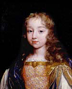 Suit,
ensuite, l'avènement de Louis XIV.
Ce dernier étant mineur, sa mère, Anne d'Autriche,
et le
cardinal Mazarin règnent pour lui. Durant cette période a lieu
"la Fronde", une révolution des nobles, puis du peuple
(référence: le film de Roger Planchon
"Louis, enfant roi").
Grâce à l'habileté du ministre Mazarin, ce conflit se termine à
l'avantage de la monarchie.
À partir de 1661 (référence: le film
de Gérard Corbiau "Le roi danse"),
Louis XIV commence un long règne marqué de plusieurs
faits marquants, dont la révocation de
l'édit de
Nantes. L' édit de
Fontainebleau, promulgué par le roi en octobre 1685, manifeste l'instauration en
France d'un catholicisme rigoureux. Il oblige sous la contrainte les
huguenots à se convertir. Le roi Louis XIV veut apparaître en Europe comme le champion du catholicisme, pour braver le pape et
l'empereur Léopold qui se flatte d'avoir repoussé les Turcs assiégeant
Vienne.
La révocation de l'édit de Nantes est considérée comme la
plus lourde erreur de Louis XIV. Elle amorce une fin de règne difficile
et a des conséquences graves pour la France (exil de 300,000 huguenots,
souvent des bourgeois bien nantis et instruits, et la déchristianisation du siècle
suivant).
ANGLETERRE
Le 17ème siècle en Angleterre est
tumultueux. En 1603 Jacques VI Stuart d'Écosse devient Jacques 1er
d'Angleterre. Dès le début de son règne, le 5 novembre 1605, la «Conspiration des
Poudres» est
découverte à Londres.
D'anciens officiers catholiques, en relation avec les gouvernants
espagnols et peut-être les jésuites, envisagent de faire sauter le
Parlement de Westminster le jour même de la séance inaugurale, en présence
du roi et de ses ministres. Mais l'un des conjurés est arrêté
alors qu'il s'apprête à mettre le feu à 36 barils de poudre.
Ces conjurés reprochent au roi anglican Jacques Ier Stuart son intolérance
à leur égard comme envers les puritains. Ils sont contraints à la
fuite ou exécutés sitôt leur conspiration découverte .
En souvenir de celle-ci, les enfants anglais ont gardé l'habitude de
faire éclater des pétards le 5 novembre.
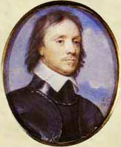 En 1625 commence le règne de Charles
1er, mais ce
dernier sera décapité en 1649 suite à des troubles religieux menant à
une révolution, dont le chef est Cromwell (ci-contre).
Ce dernier assure ensuite un
Protectorat, lire ici une dictature, jusqu'à sa mort en 1658.
Monk rétablit la royauté et
les Stuarts. Mais de 1688 à 1689, l'Angleterre vit une deuxième
révolution. Guillaume III règne alors.
Ainsi, les deux pays
connaissent des guerres de religion et la révolution, mais
ils vont évoluer chacun dans des directions opposées, l'Angleterre vers une
monarchie parlementaire, la France vers une monarchie absolue.
EUROPE
De nombreuses guerres
dévastent l'Europe au 17ème siècle. Guerres de religion
entre les catholiques et les réformistes, guerres de succession, guerres
de territoires. Les Turcs vont même assiéger Vienne.
La Guerre de Trente Ans de 1618 à 1648 qui se termine par le Traité de
Westphalie. La Guerre d'Espagne de 1642 à 1659 qui se termine par
le Traité des Pyrénées.
La Guerre de Dévolution de 1667 et 1668 qui se termine par le traité
d'Aix-la-Chapelle.
La Guerre de Hollande de 1672 à 1678 qui se termine par la Paix de
Nimègue.
En 1688-1697, la Guerre de la ligue d'Augsbourg qui se termine par la Paix
de Ryswick.
Dans chacun de ces traités, des
territoires sont redistribués entre les pays concernés, souvent même dans
leurs colonies lointaines, des
successions royales sont reconnues, des rétributions sont fixées...
En France, deux grands capitaines dominent l'histoire militaire, Condé et
Turenne.
EUROPE DE
L'EST, ASIE, AMÉRIQUE, AFRIQUE
En Russie l'anarchie règne
jusqu'à l'avènement des Romanov en 1613. Pierre le Grand débute
son règne en 1682.
La reine Christine règne en
Suède de 1632 à 1654. Ladislas II est le roi de Pologne à
la même époque. En 1683 les Turcs assiègent Vienne. En 1699
la Paix de Carlowitz est signée, les Turcs perdent la Hongrie.
Au Japon, Jeyayasu Tokugawa
devient Shogun en 1603. En 1651, les Shoguns deviennent les maîtres
du Japon.
En Chine, les
Mandchous sont à Moukden en 1625. En 1644, c'est la chute des
Mings, la
dynastie mandchoue débute.
En Inde, Aurengzeb, un
moghol, écarte son père et ses frères du pouvoir en
les assassinant, en
1659, et se proclame empereur.
En Amérique, en Afrique et en
Asie les Européens continuent leurs explorations et leur colonisation. En 1699, les Français prennent possession de la
Louisiane.
RETOUR AU HAUT DE LA PAGE

L'ÂGE DE
LA RAISON
Une ère nouvelle commence,
plusieurs penseurs, souvent à la fois mathématicien et philosophe,
prennent pour tâche de considérer la raison humaine non pas dans son
origine divine mais dans son activité affective.
Ils vivent dans une période trouble de guerres de religions, plusieurs
vont en souffrir, certains vont conclure à la tolérance.
DESCARTES,
René (1596-1650)
|
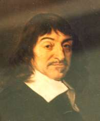 |
-
- "Et j'avais toujours un extrême désir d'apprendre à
distinguer le vrai d'avec le faux
- pour voir clair en mes actions et marcher avec assurance
en cette vie."
Descartes, Discours de la méthode
|
Inventeur de la géométrie
analytique (alliance de la géométrie et de l'algèbre), Descartes est
non seulement un mathématicien et le philosophe de la raison, mais encore
incarne-t-il l'aventure philosophique qui peut être celle de toute
personne insatisfaite des opinions reçues. Sa méthode lui
permet de se dégager définitivement des confusions de la scolastique en
définissant une logique de l'idée claire et précise, fondée sur la déduction
allant du simple au complexe. Son "Discours de la
Méthode" et ses "Méditations métaphysiques" sont la base
de la philosophie et de la science modernes.
BACON,
FRANCIS (1561-1626)
Philosophe anglais, il est
l'un des créateurs de la méthode expérimentale. Il rend la
recherche scientifique indépendante du principe d'autorité et de la
méthode déductive. Il établit une classification
méthodique des sciences.
HOBBES,
THOMAS (1588-1679)
Philosophe anglais, il est
l'auteur du Léviathan. Écrit
en 1651, ce texte ouvre la voie à la philosophie politique moderne et
nourrit la réflexion politique jusqu'à la Révolution française.
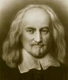
Contrairement à ses nombreux prédécesseurs, Hobbes ne soulève plus la
question du choix du meilleur régime mais il contribue à fonder la
politique sur la " vérité effective des choses ", à
la façon de Machiavel, et s'interroge sur l'obéissance légitime et par
conséquent sur la souveraineté.
L'état de nature qu'Hobbes décrit est un mode de vie impitoyable et
insupportable. Les hommes, pour préserver leur vie et pour s'acheminer
vers la paix, renoncent d'eux-mêmes à cet état de guerre et choisissent
une autorité supérieure : le souverain. Celui-ci hérite de tout ce
qui était propre aux individus dans l'état de nature pour en être le détenteur
exclusif. Le Léviathan, cet anthropomorphisme utilisé par le philosophe,
détient un pouvoir absolu et illimité en échange de la paix civile
apportée aux individus.
Partisan de l'absolutisme, Hobbes fait du souverain un être raisonnable
guidé dans son action par des considérations utilitaires, dont le devoir
est de réussir. Pour certains, à partir de son interprétation libérale
de la loi, Hobbes serait même un des fondateurs du libéralisme. À
travers la description rationaliste du contrat social et du pouvoir
souverain c'est la dimension scientifique de la politique qui est mise en
exergue.
LOCKE, JOHN
(1632-1704)
Philosophe anglais, il rejette les idées innées, pour placer la source de nos connaissances
dans l'expérience, c'est-à-dire la sensation aidée de la
réflexion. Il écrit, en outre, un Traité sur l'Éducation et des
Lettres sur la tolérance.
SPINOZA,
BARUCH (1632-1677)
 Spinoza est surtout connu
comme l'auteur d'un système (et le terme a souvent une connotation péjorative).
Au 18ème siècle, le qualificatif de spinoziste désignera abusivement
les matérialistes parce qu'il critiqua la théologie traditionnelle et
l'idée d'un Dieu créateur. La philosophie spinoziste est donc en marge.
Partisan de la démocratie, il vit pauvrement et persécuté. Spinoza est surtout connu
comme l'auteur d'un système (et le terme a souvent une connotation péjorative).
Au 18ème siècle, le qualificatif de spinoziste désignera abusivement
les matérialistes parce qu'il critiqua la théologie traditionnelle et
l'idée d'un Dieu créateur. La philosophie spinoziste est donc en marge.
Partisan de la démocratie, il vit pauvrement et persécuté.
La grande thèse théorique de
Spinoza est qu'il n'y a qu'une seule substance, infinie et unique, Dieu,
qui se confond donc avec le monde, l'univers lui-même. " Deus
sive Natura " (Dieu, c'est-à-dire la Nature). Cette substance a
une infinité d'attributs (c'est-à-dire d'aspects, de caractères de la
substance), eux-mêmes infinis mais nous n'en connaissons que deux, les
seuls accessibles à notre pensée : la Pensée et l'Étendue. La Pensée
est un attribut et notre âme, ainsi que chaque idée particulière, sont
des " modes " de cette pensée (c'est-à-dire qu'elles
font partie de l'attribut plus général qu'est la Pensée). Chaque objet
matériel (cette table, ce cahier, mon corps...) sont des modes de
l'attribut Étendue (étendue signifie "qui occupe de
l'espace"). Les modes sont finis.
Cette thèse est à la fois panthéiste et athée. Panthéiste, car elle
identifie Dieu et le monde. Athée car elle nie l'existence d'un Dieu
moral, créateur, transcendant.
MALEBRANCHE,
NICOLAS DE 1638-1715)
Sa métaphysique idéaliste,
issue du cartésianisme, résout le problème de la communication de
l'âme et du corps par la vision en Dieu. Malebranche est un
oratorien (un religieux), sa philosophie professe l'optimisme et fonde la
morale sur l'idée d'ordre.
LEIBNIZ,
WHILHELM (1646-1716)
Philosophe et mathématicien
allemand. Il étudie avec Bossuet les possibilités d'une fusion
entre les Églises catholique et réformée, découvre en même temps que
Newton les bases de l'analyse mathématique et construit une machine
multiplicatrice. Sa philosophie est idéaliste.
BAYLE,
PIERRE (1647-1706)
|

Un apôtre de la
tolérance
et du libre-examen
|
-
Philosophe français, Bayle,
auteur d'un Dictionnaire historique et critique annonce la pensée
philosophique "des lumières" du 18ème siècle.
Né protestant, Bayle se convertit par obligation au catholicisme, puis se reconvertit à la religion
dite réformée. Il devient alors un sceptique accompli,
et il fuit toute vérité
certaine et son cortège
d'exclusions
et d'intolérance.
|
Extrait du Commentaire philosophique (1686)
Texte intemporel où parle l'humanité, non au sens de commisération,
mais au sens de pensée rationnelle, au sens où l'humanité est ce qui
porte les lumières de la raison sans quoi elle ne mérite plus son
nom:
«Il est impossible, dans l'état où nous nous trouvons, de connaître
certainement que la vérité qui nous paraît (je parle des vérités
particulières de la Religion, et non pas des propriétés des nombres ou
des premiers principes de métaphysique, ou des démonstrations de géométrie)
est la vérité absolue; car tout ce que nous pouvons faire est d'être
pleinement convaincus que nous tenons la vérité absolue, que nous ne
nous trompons point, que ce sont les autres qui se trompent, toutes
marques équivoques de vérité, puisqu'elles se trouvent dans les païens
et dans les hérétiques les plus perdus. Un Papiste est aussi
satisfait de sa religion, un Turc de la sienne, un Juif de la sienne, que
nous de la nôtre (Bayle est protestant, les Papistes - terme péjoratif
- sont les Catholiques). Les plus fausses religions ont leurs
martyrs, leurs austérités incroyables, un esprit de faire des prosélytes
qui surpasse bien souvent la charité des orthodoxes et un attachement
extrême pour leurs cérémonies superstitieuses. Dans la condition
où se trouve l'homme, Dieu se contente d'exiger qu'il cherche la vérité
le plus soigneusement qu'il pourra et que, croyant l'avoir trouvée, il
l'aime et y règle sa vie. Le principal est ensuite d'agir
vertueusement; et ainsi chacun doit employer toutes ses forces à honorer
Dieu par une prompte obéissance à la morale. À cet égard, c'est-à-dire
à l'égard de la connaissance de nos devoirs pour les mœurs, la lumière
révélée est si claire que peu de gens s'y trompent, quand de bonne foi
ils cherchent ce qui en est.»
LE
BAROQUE ET LE CLASSICISME
Le 17ème siècle commence avec la vogue du baroque,
héritée du siècle précédent, et qui correspond à des influences
italiennes et espagnoles, lesquelles ont également gagné
l'Angleterre. La "préciosité" compliquée et
pédantesque et même le "burlesque" sont considérés comme des
déformations du baroque.
En France, la réaction à ce mouvement est de
promouvoir la discipline, l'ordre et la régularité. Des
théoriciens élaborent des règles. L'Académie française, créée
par Richelieu, symbolise cet effort pour donner à l'art littéraire une
extrême dignité et une consécration officielle.
L'un des caractères du classicisme est d'être une
littérature sociale. Ses plus hautes manifestations, le théâtre
et l'éloquence de la chaire, sont celles qui exigent un public assemblé
pour une cérémonie, qu'elle soit profane ou sacrée. À la stricte
hiérarchie sociale du temps, à l'étiquette très organisée de la cour,
correspond en littérature la belle ordonnance classique.
Ainsi le classicisme pourrait se définir comme une
harmonie de l'auteur avec son milieu, harmonie entre la grandeur de l'art et la
grandeur du règne du monarche absolu. Heureusement ce dernier a bon
goût. Son orgueil lui fait aimer tout ce qui est grand et
majestueux, mis il sait apprécier le franc comique de Molière, qui peut
se permettre certaines audaces, grâce à la protection du roi.
Louis XIV consacre également la renommée de Racine, Boileau,
Bossuet. Si autoritaire qu'il soit, il n'impose pas une ligne à la
littérature et ne la mue pas en propagande. Il sent que le génie
est incompatible avec la servilité et tolère même une certaine
indépendance frondeuse. S'il n'aime guère La Fontaine, ce qui est
compréhensible, sa vengeance se borne à retarder son entrée à
l'Académie française. Le triomphe du classicisme est lié au
long règne de Louis XIV, ce souverain épris de gloire qui a compris que
la postérité l'admirerait d'avoir été le protecteur lucide et libéral
des lettres et des arts.
La fin du siècle laisse apparaître des tendances
nouvelles qui montrent que l'équilibre classique est menacé. Ainsi
La Bruyère et Fénelon, sans rompre complètement, annoncent des goûts
qui s'affirmeront dans la littérature du 18ème siècle: le bel esprit et
la grâce savamment négligée.
Le besoin général de codifier
et normaliser
Le 16ème siècle et les précieux avaient
cherché à enrichir leur vocabulaire. À La fin du 17ème siècle
on va maintenant chercher à établir la liste officielle des mots.
Le premier dictionnaire paraît en 1694, accompagné d'un
précis grammatical. La langue française est ainsi normalisée.
En
littérature, on s'attache à différencier les genres : farce, comédie,
drame, tragédie, roman et nouvelle.
Le culte des anciens
Pendant le Moyen Âge, et surtout à la renaissance, on
n'a cessé d'admirer le génie des anciens. Les écrivains classiques, à
leur tour, les imitent car ils pensent que les grands auteurs de
l'antiquité avaient atteint la perfection, prouvé selon eux par la durée
de leur renommée. Molière a ainsi imité Plaute, Racine Sénèque
ou Euripide, La Fontaine le fabuliste grec Ésope, Boileau dans son Art
Poétique la Poétique d'Aristote...
Il y eut la "querelle des Anciens et des
Modernes", une polémique initiée par Perrault qui
défend les auteurs Modernes, et Boileau qui défend les Anciens.
Chacun développe leurs thèses et ont leurs défenseurs. Tous
les écrivains prennent un camp ou l'autre et cette polémique dure plus
de 50 ans. Les conséquences n'en sont pas négligeables. La
remise en cause des modèles du passé ébranle les notions de tradition
et d’autorité. Le goût classique ne peut plus imposer son esthétique
qui puise dans l’Antiquité, et l’esprit critique qui résulte de
l’affrontement va s’imposer. La querelle des Anciens et des
Modernes annonce ainsi la philosophie des Lumières du siècle suivant.

|
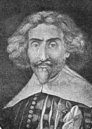
CERVANTÈS,
MIGUEL DE
(1547-1616)
Écrivain espagnol,
auteur de l'immortel don Quichotte de la Manche.
|

MALHERBE,
FRANÇOIS DE
(1555-1628)
Poète lyrique,
protégé d'Henri IV et de Louis XIII. Plus que son oeuvre,
ses théories ont une grande influence. Partisan d'une poésie
à l'expression claire et simple, il s'oppose à la poésie
savante et ouvre la porte au classicisme.
|
|

SHAKESPEARE,
WILLIAM
(1564-1616)
Dramaturge anglais,
son oeuvre immense est extraordinaire par sa richesse, sa
diversité. Il s'inspire de l'histoire, de la légende ou
de sa fantaisie. Le mouvement dramatique y a une puissance
inimitable, tous les tons s'y mêlent, du burlesque au
sublime. Ses sonnets sont des chefs-d'œuvre poétiques,
ses pièces de théâtre ont transcendé le temps.
|
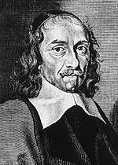
CORNEILLE,
PIERRE
(1606-1684)
Poète dramatique. Il
est le véritable créateur en France de l'art classique au
théâtre. Il substitue au drame d'intrigue un drame
intérieur. Ses héros, humains mais vaillants, sont
passionnément attirés par les sentiments les plus élevés, Le Cid,
par exemple. Pour exprimer cet héroïsme, qui s'élève souvent
au sublime, Corneille use d'une langue simple et hardie, ses vers sont
souvent frappés comme des maximes.
|
|

LA
FONTAINE, JEAN DE
(1621-1695)
Poète, il
connaît la célébrité et la protection de mécènes en
publiant des Contes en vers. Il publie ensuite
ses Fables. Sans jamais inventer le sujet de ses
fables, qu'il emprunte aux Anciens, il donne à ces petits
récits une vie intense et un tour plaisant. La morale
n'est pas dogmatique, elle est enrichie par ses réflexions
personnelles et son expérience de la vie.
|

MOLIÈRE,
J.B. POQUELIN
(1622-1673)
Auteur
comique. Protégé par Louis XIV, il écrit de
nombreuses comédies pour divertir la Cour. Comédien
aguerri, il utilise toute la gamme des effets comiques.
Ses chefs-d'œuvre sont ses pièces où, s'attaquant à un
vice ou un travers, il campe des personnages qui sont devenus
des archétypes. Quant à la morale qui se dégage de
son théâtre, elle recommande à l'homme de ne jamais
dépasser la mesure et de rester dans les limites que le
bon sens fixe à la nature humaine.
|
|
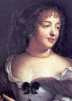
MME
DE SÉVIGNY
(1626-1696)
Auteure
de lettres adressées à divers correspondants, dont sa
fille. Publiées en 1726, ces lettres valent par la
spontanéité du style, la fraîcheur de l'imagination, et
contiennent d'intéressants détails sur les mœurs du temps.
|
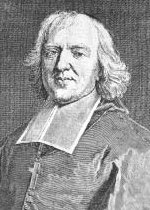
BOSSUET
(1627-1704)
Prélat, écrivain et
orateur. Célèbre pour ses sermons et ses oraisons funèbres, il
est choisi par Louis XIV comme précepteur du Dauphin. Il
soutient la politique religieuse du roi contre les protestants.
|
|
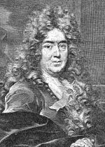
PERRAULT,
CHARLES
(1628-1703)
Il initie la
"querelle des Anciens et des Modernes" en prenant
parti pour les Modernes. Mais sa notoriété vient
de ses Contes de ma mère l'Oye. Issus du
folklore populaire français, ces contes, adaptés littérairement par Perrault,
appartiennent à une
littérature orale, mouvante, destinée aux villageois et faits pour être lus le soir, à la
veillée. Perrault sauve de l'oubli huit récits traditionnels, devenus
universels, tels que La Belle au bois dormant, Le Petit
Chaperon rouge, La Barbe-bleue, Cendrillon
etc., récits transmis de génération en génération
et racontés aux enfants depuis des siècles.
|
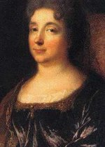
MME
DE LA FAYETTE
(1634-1693)
Auteure de La
Princesse de Clèves, roman psychologique d'une grande
sobriété d'expression, de nouvelles et de Mémoires de la
cour de France.
|
|

BOILEAU,
NICOLAS
(1636-1711)
Imitateur du latin
Horace, il se consacre à la poésie morale et
satirique. Il excelle surtout dans la critique
littéraire. Son esprit mordant s'attaque, au nom du bon
sens et de la nature, à l'emphase, à l'érudition
pédantesque, à la préciosité de mauvais goût. Il
contribue à fixer l'idéal littéraire auquel on devait
donner le nom de classicisme. Ami dévoué de Molière
et Racine. |

RACINE,
JEAN
(1639-1699)
Poète tragique, il
réalise à la perfection l'idéal de la tragédie
classique. À l'inverse de Corneille, qui recherche des
situations compliquées au milieu desquelles ses héros
déploient des qualités surhumaines, Racine veut une action
simple, claire, dont les péripéties naissent de la passion
même des personnages.
|
|

LA
BRUYÈRE, JEAN DE
(1645-1696)
Écrivain et
moraliste. Ses portraits peignent d'une façon vivante et
souvent cruelle les mœurs de son temps.
|
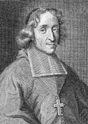
FÉNELON
(1651-1715)
Prélat et
écrivain. Certains écrits pleins de critiques
indirectes contre la politique de Louis XIV lui valent la
disgrâce, et d'autres, favorables à la doctrine quiétiste,
lui valent la condamnation de l'Église. Fénelon se
soumet et se retire en province. Esprit libéral, âme
sensible, Fénelon laisse déjà entrevoir un esprit nouveau
qui annonce le 18ème siècle, qu'on appellera le siècle des
Lumières. |
LE
BAROQUE ET LE CLASSICISME
Suite à la réforme
protestante, l'église catholique s'impose une contre réforme.
Elle ne prend plus les armes. Par contre, elle investit plus que
jamais dans l'art, y voyant un rayonnement par le "beau", au
service de l'image papale. Rome
devient la capitale de la peinture, et des artistes du monde
entier viennent y travailler. L'art se dissocie un peu plus des icônes
religieuses.
Le baroque flamand se différencie
en mettant la priorité sur la force des couleurs confrontées et les scènes
mouvementées. Rubens
domine la période baroque en Europe, avec Poussin (en France), et il est
le premier à vendre des toiles monumentales à des prix astronomiques.
La variante "classiciste" du baroque a lieu en France
essentiellement, avec Nicolas Poussin et Le Lorrain.
C'est une peinture plus calme, équilibrée, avec des études préalables.
La lumière devient également importante, mais plus douce qu'en Hollande.
Le genre pictural des natures
mortes connaît un âge d'or au 17ème siècle alors que la
peinture de genre prend de plus en plus d'importance dans le décor.
Ces compositions d'objets inertes, savamment mises en place sur des
entablements, sont pour ainsi dire animées de fruits et de fleurs.
Au 17ème siècle, les natures mortes profitent de tous les développements
apparus à l'époque dans l'histoire de la peinture, et notamment les
clairs-obscurs, lancés par Caravage
(1573-1610), qui mettent des sujets en valeur par l'emploi d'ombres et de
lumières.
A cette époque, la Hollande
devient le pays le plus riche au monde, car le plus commerçant. Après
l'indépendance accordée par l'Espagne au nord de la Hollande, ce pays
devient protestant, rejette les icônes catholiques et de l'antiquité et
s'intéresse à la vie quotidienne hollandaise, il donne ses lettres de
noblesses à la lumière extérieure et intérieure.
Vermeer est un amoureux de la
peinture. Il compose ses tableaux avec minutie, avec des croquis préalables,
et ne peint pas plus de deux tableaux par an. Il est marchand d'art
par périodes, pour survivre. Il meurt cependant dans la misère.
Rembrandt est le maître du clair-obscur.
Il met en scène les ombres. Les yeux de ses personnages ont une
force rare pour l'époque, et font paraître ses tableaux comme très
modernes par tous les peintres depuis.
|

|
RUBENS
(1577-1640)
Artiste et diplomate flamand.
Rubens travaille pour Marie de Médicis (Galerie Luxembourg), les
rois d'Espagne et d'Angleterre. Chef d'un atelier très
fécond à Anvers, il a marqué de sa forte personnalité toute
la peinture flamande de son siècle. Par l'ampleur de son
dessin, la liberté de sa technique et la chaleur des ses
couleurs, il est l'un des plus grands décorateurs de la peinture. |
|

LE
NAIN
Ils sont trois frères, Antoine
(1588-1648) qui est l'auteur de tableaux de genre, Louis
(1593-1648), le plus célèbre, peint des scènes paysannes, et le
troisième, Mathieu
(1607-1677) peint des scènes mythologiques et des tableaux de
genre. Il leur arrive de travailler à trois sur le même
tableau. |
|
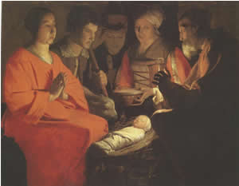
|
LA
TOUR, GEORGES
de la (1593-1652)
Peintre, français, de la
réalité. Il a laissé des oeuvres religieuses et de
genre. |
|

|
POUSSIN,
NICOLAS (1594-1665)
Peintre français. Il passe
la majeure partie de sa vie à Rome. Il évolue vers un
classicisme de plus en plus dépouillé. Ses dernières
oeuvres témoignent d'un lyrisme large et puissant. |
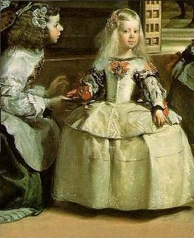 |
VELASQUEZ,
DIEGO (1599-1660)
Peintre espagnol. Portraitiste
hardi, il est le peintre le plus original qu'ait produit l'école
espagnole et un des plus grands coloristes de tous les temps.
Il fait plusieurs voyages en Italie. La plupart de ses toiles
sont réunies au Prado. |
 |
VAN
DYCK, ANTOINE (1599-1641)
Peintre flamand.
Collaborateur de Rubens, puis peintre de la cour de Charles 1er
d'Angleterre, ses portraits sont tous des chefs-d'œuvre. |
|
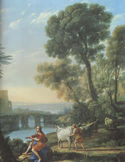 |
LE
LORRAIN, CLAUDE (1600-1682)
Peintre paysagiste français.
Il passe une grande partie de sa vie à Rome où il se lie
d'amitié avec Poussin. Il est le peintre du soleil et de la
lumière, et l'un des maîtres français du paysage. |
|
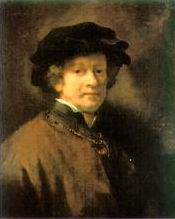 |
REMBRANT
(1606-1669)
Peintre et graveur hollandais dont l'œuvre
compte près de 700 pièces. Sa puissance, la richesse
éblouissante de son pinceau, sa science du clair-obscur, la vie
de ses carnations, la fine harmonie de l'ensemble, le placent
parmi les plus grands génies de la peinture. |
|
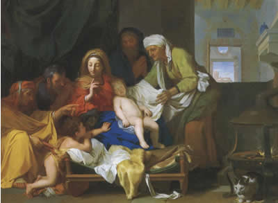
LE
BRUN, CHARLES (1619-1690)
Peintre français. Protégé
de Colbert et de Louis XIV, il exerce sur les arts de l'époque
une influence considérable. Il est le premier peintre du
roi en 1662. Ce dernier le nomme ensuite directeur de la Manufacture
des Gobelins, et directeur de l'Académie. Il préside à la
décoration de Versailles. La série des "Batailles
d'Alexandre", au Louvre, forme la partie principale de son
oeuvre de peintre. |
|

|
VERMEER,
JAN (1632-1675)
Peintre de paysages et
d'intérieurs hollandais. Longtemps méconnu, il est
considéré maintenant comme un des plus grands peintres du 17ème
siècle. Son oeuvre, peu abondante, comprend des scènes
d'intérieur, des paysages et quelques portraits qui témoignent
de son goût pour les jeux de lumières et les harmonies subtiles
de couleurs. |
RETOUR AU HAUT DE LA PAGE

MUSIQUE
BAROQUE
Voici
quelques musiciens importants du 17ème siècle, mais il y eut aussi
Pachelbel, Blow, Sweelinck, Rossi, Cavalli, Frescobaldi, Charpentier, de
La Lande, Buxtehude, Couperin, ...
|
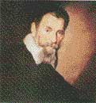
|
MONTEVERDI,
CLAUDIO (1567-1643)
Italien, fils de médecin,
Monteverdi compose à 15 ans ses premiers chants. Puis il devient violoniste et chanteur du duc de
Gonzague, à Mantoue, pendant 22 ans. Au sommet de son succès, il
devient maître de chapelle de la Basilique Saint Marc de Venise.
À la
mort de sa femme, il entre dans les ordres. "Orféo", en 1607,
est le premier opéra de l'histoire. Il continue de composer des
oratorios, jusqu'à sa mort, où il reçoit des funérailles dignes d'un
roi. |
|
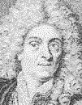
|
LULLY,
JEAN-BAPTISTE (1632-1687)
Italien, il est engagé à la cour
du duc de Guise à 14 ans, puis, comme danseur et violoniste, à
la cour de Louis XIV. En 1653, il devient compositeur de la
cour. Il travaille avec Molière sur "Le bourgeois
gentilhomme". En 1672, il monte l'Académie royale de
musique et compose des opéras d'un genre nouveau, les tragédies
lyriques, dont "Athys" et "Phaéton". Il
meurt en 1687 couronné de succès et Louis XIV lui offre des
funérailles nationales. |
|

|
PURCELL,
HENRY (1659-1695)
Anglais, fils de musiciens, d'abord
chanteur, il rejoint le corps des violonistes du roi à 18
ans. Puis, il devient organiste en chef de l'Abbaye
de Westminster à 20 ans (son premier métier était d'entretenir
cet orgue). Fabriquant d'orgue et copiste, il publie ses
premières sonates en 1683, qui lui apportent aussitôt le
succès. Il s'intéresse à la musique lyrique et
compose des opéras avec le poète Priest. |
|
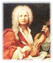
|
VIVALDI,
ANTONIO (1678-1741)
Italien, né à Venise d'un père violoniste, il apprend
cet
instrument très tôt. De santé fragile, il entre dans les ordres.
Le
"prêtre roux" rejoint l'orphelinat d'Ospedale de la Pietà comme professeur de violon en 1703. Puis il devient maître de chapelle
et y reste 40 ans. Il compose beaucoup, dont l'opéra "Orlando
Furioso", fait des tournées qui lui apportent une gloire européenne,
et meurt à Vienne en 1741 dans une vie dépouillée de tout luxe. |
RETOUR AU HAUT DE LA PAGE

LES
LOIS DE LA NATURE,
FISSURE ENTRE SCIENCE ET RELIGION
Cette fissure ne se fait pas sans difficultés, on s'en doute bien,
le pouvoir religieux tenant fermement à ses positions.
Les philosophes, les mathématiciens, les astronomes et les
physiciens découvrent peu à peu les lois de la nature, mais, ces lois ne
sont pas conformes à la Scholastique, c'est-à-dire aux saintes
écritures. Ces
chercheurs, voulant connaître le monde par l'expérimentation et non plus
par les doctrines de la foi, s'exposent ainsi aux fureurs de
l'Inquisition. On désigne sous ce nom les tribunaux établis dans
toute la chrétienté, à partir du Concile de Vérone en 1183 au Moyen-âge,
et jusque dans les temps modernes, pour la recherche et le châtiment des
hérétiques, c'est-à-dire de tous ceux qui professent une doctrine
contraire à la foi catholique. En France l'Inquisition est
supprimée en 1808 par Napoléon, mais rétablie de 1814 à
1834.
Non seulement les découvertes de ces chercheurs et de ces
philosophes heurtent "l'establishment religieux" au pouvoir, mais,
en plus, le tout se passe
sur fond de guerres de religions entre les Catholiques et les Réformistes
(protestants) dans plusieurs pays. Les temps sont difficiles pour
tous, plusieurs vivent exilés et persécutés, plusieurs, comme Newton,
taisent longtemps leurs découvertes pour ne pas "chercher le
trouble". BRAHÉ,
TYCHO (1546-1601) Astronome
danois, Tycho Brahé découvre un système (une théorie) qui porte son nom. Ses
observations permettent à Kepler d'énoncer ses lois sur les planètes. NEPER,
JOHN (1550-1617) Mathématicien
écossais, on lui doit l'invention des logarithmes en 1614.
L'objectif était de simplifier les calculs trigonométriques de
l'astronomie. Avec l'invention de ses "réglettes",
permettant d'effectuer les quatre opérations élémentaires, il est à
l'origine des premières machines à calculer dont il expose le
fonctionnement dans un traité (Rabdologiae, 1617) en introduisant, au
niveau des notations, la notation décimale actuelle des nombres décimaux,
au détriment de la notation fractionnaire :32,578 plutôt que

GALILÉE,
GALILEO GALILEI (1564-1642)
|
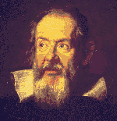 |
"Eppur, si
muove!" (Et
pourtant, elle se meut)
Mots italiens attribués à
Galilée, forcé de se rétracter pour avoir proclamé, après
Copernic, que la terre tourne sur elle-même, contrairement à la
lettre des Saintes Écritures. |
Mathématicien, physicien, astronome
italien. Galilée est l'un des fondateurs de la méthode
expérimentale. Il découvre la loi de l'isochronisme des petites
oscillations du pendule, les lois de la chute des corps, énonce le principe
d'inertie et celui de la composition des mouvements. Il imagine le
thermomètre et construit en 1609, à Venise, la première lunette
astronomique, découvrant ainsi les librations de la lune (balancement
apparent de la lune autour de son axe).
À l'époque de Galilée, l'Église fait de la théorie géocentrique de
Ptolémée une sorte d'article de foi. En agissant ainsi, l'Église
confond science et religion. Comme la théorie astronomique héritée
de l'Antiquité fait de la terre le centre de l'univers, le clergé l'a
adoptée car elle paraît conforme à leurs croyances: l'Homme, créature
privilégiée, habite ainsi le centre du monde…
C'est dans ce contexte que Galilée prend connaissance de la théorie héliocentrique
de Copernic. Galilée ne s'arrête pas au fait que cette théorie peut
paraître contraire au dogme de son époque. En cela il est l'un des
premiers scientifiques modernes, ne reconnaissant d'autre critère de la vérité
que la démonstration (et non les citations bibliques). Il écrit
ainsi: "La certitude mathématique est égale à la divine".
| L'Académie des Lynx est fondée le 25 décembre
1611 pour défendre la philosophie de Galilée. C'est une société savante qui interdit de mêler
politique ou religion à la science |

|
Mais la Cour de Rome dénonce Galilée comme hérétique, et le somme de ne plus
enseigner sa théorie, il s'incline pour sauver sa vie. Mais, revenu à Florence, il publie en 1632 toutes les preuves de la vérité
de la théorie de Copernic. La pression de "l'establishment" est
alors impitoyable, et Galilée est arrêté, et ce même s'il pense avoir
convaincu plusieurs personnages importants de son époque, et que le Pape
Urbain VIII est un de ses amis. Il subit un procès
devant l'Inquisition, sa sentence est qu'il doit abjurer par trois fois,
à genoux, la
théorie qu'il prône et enseigne. Son oeuvre et celle de Copernic
seront mises à l'index. Galilée finit sa vie en résidence
surveillée à la Villa Médicis.

Le procès de Galilée,
en 1632, marque la séparation entre l'ancien et le nouveau en matière de
sciences. C'est la rupture entre science et religion qui mènera
au prodigieux développement de la science.
Galilée est un chercheur qui ne s'isole
pas mais qui est en relation avec les marchands et les artisans de son époque;
de plus il veut répandre ses découvertes afin de contribuer au progrès et
au mieux être de ses contemporains, au risque de perdre sa liberté.
Il n'a pas découvert l'héliocentrisme, mais mis au point le télescope.
Il innove dans l'usage d'un instrument technique pour contredire ou appuyer
une théorie scientifique.
Il fait figure de fondateur de la science moderne:
la science n'est plus purement spéculative, mais cherche à être cohérente
avec la technique qui permet de faire des expériences et non pas seulement
d'appliquer les principes.
KEPLER,
JOHANNES (1571-1630)
 |
Astronome et physicien allemand, son existence
malheureuse et persécutée ne l'empêcha pas de produire des
oeuvres de génie.
Il est célèbre pour sa formulation
et sa vérification des trois lois du mouvement planétaire. Ces
lois sont maintenant connues sous le nom de lois de Kepler. |
Lors de ses études universitaires,
Kepler accepte immédiatement la théorie de Copernic, croyant que la
simplicité de l'ordre planétaire de Copernic devait avoir été le projet
de Dieu. En 1594, Kepler élabore une hypothèse géométrique
complexe pour expliquer les distances entre les orbites planétaires.
Il propose alors que le Soleil exerce une force qui diminue avec la distance
et maintient les planètes dans leurs orbites. Il publie son
explication dans un traité appelé Mysterium Cosmographicum
en 1596. Ce travail est important parce qu'il présente la première
explication complète et valable des avantages géométriques de la théorie
de Copernic.
Il devient l'assistant de l'astronome
danois Tycho Brahé dans son observatoire, situé aux environs de
Prague. À la mort de Brahé en 1601, Kepler prend sa succession comme
mathématicien impérial et astronome à la cour de Rudolf II, Saint
Empereur romain. Il publie Astronomia Nova en 1609, le point
culminant de ses recherches pour calculer l'orbite de Mars. Ce traité
contient les formulations de deux des lois du mouvement planétaire, appelées
lois de Kepler. La première
stipule que les planètes se déplacent selon des orbites elliptiques avec
le Soleil; la seconde énonce que la ligne imaginaire que l'on
tracerait entre le Soleil et une planète balaie des aires identiques d'une
ellipse pendant des intervalles de temps égaux; en d'autres termes, plus la
planète se rapproche du Soleil, plus elle se déplace rapidement.
En 1619, Kepler publie son Harmonice
Mundi, la dernière partie de cette oeuvre contient la troisième loi de
Kepler: le cube de la distance entre une planète et le soleil divisé par
la période orbitale de cette planète au carré est une constante et est la
même pour toutes les planètes.
À la même époque paraît l'Epitome
Stronomiae Copernicanae qui rassemble toutes les découvertes de Kepler
en un seul volume. D'importance incomparable, ce livre devient le premier
manuel d'astronomie basé sur les principes coperniciens. Pendant
les trois décennies suivantes, il a une influence majeure en convertissant
de nombreux astronomes à ses théories.
La dernière œuvre majeure de la vie de
Kepler est les Tabulae Rudolfinae en 1625. Le mathématicien et
physicien anglais Sir Isaac Newton se repose fortement sur les théories et
les observations de Kepler pour formuler sa théorie de la force
gravitationnelle.
HARVEY,
WILLIAM (1578-1657)
Médecin anglais, Harvey est célèbre
pour sa découverte de la circulation du sang en 1628.
Les prémices de la médecine et de la chirurgie modernes avaient eu lieu le
siècle précédent avec le médecin français Ambroise
Paré (1536-1590). Médecin royal, Paré découvre la
ligature des artères, qu'il substitue à la cautérisations dans les
amputations. Il publie de nombreux travaux scientifiques.
GUERICKE,
OTTO VON
(1602-1686)
Physicien allemand, il invente en 1650
une machine pneumatique pour faire le vide, 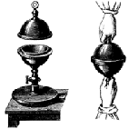 il
mit en évidence la pression atmosphérique grâce à la célèbre expérience
des hémisphères de Magdebourg, dont il
est le bourgmestre, en 1654.
Loi ou phénomène : La pression atmosphérique
s'exerce dans tous les sens.
Description : Ce sont deux hémisphères creux en laiton qui peuvent
s'appliquer l'un contre l'autre, de façon hermétique. Un des hémisphères
porte un robinet qui permet de le visser sur une pompe à vide.
On fait le vide à l'intérieur de l'ensemble des deux hémisphères,
on constate alors qu'il est très difficile de les séparer. Cette
machine émerveillait les gens.
Il invente aussi la première machine électrostatique.
SNELL van
Roijen dit SNELLIUS (1581-1626)
Astronome et géomètre hollandais, Snell
découvrit le premier les lois de la réfraction en 1621. La réfraction de
la lumière est une branche fondamentale de l'observation astronomique.
Thyco Brahé fut le premier à en tenir compte dans ses observations.
Ces lois, dites en France de Descartes, sont souvent appelées lois de
Snell-Descartes.
En tant que géomètre, on doit à Snell les premiers calculs trigonométriques
visant à calculer l'arc d'un méridien, en 1617. Son procédé,
aujourd'hui appelé méthode de triangulation,
fut utilisé dès lors dans toutes les opérations géodésiques.
TORRICELLI,
ÉVANGELISTA (1608-1647)
Physicien italien, Torricelli découvre les effets de la pression atmosphérique.
En 1626, Torricelli, jeune disciple de Galilée alors âgé de 18 ans, ne se
satisfait pas d'une réponse de son maître, à qui on avait demandé d'éclaircir
le mystère des fontaines, soit: " Pourquoi l'eau des fontaines ne
peut elle être pompée à une hauteur supérieure à 32 pieds
?" Galilée pensait que l'eau, trop pressée à la base de
la colonne, l'empêchait de s'élever plus haut. Torricelli réfléchit,
et apporte une autre réponse : c'est le poids de l'air qui fait monter
l'eau dans le tuyau, et non pas la nature qui a horreur du vide, par
l'action de la pompe.
Il en fait la preuve en retournant un tube de 96 cm rempli de mercure
dans une cuve remplie du même métal. Le mercure du tube se déverse dans
la cuve, et se stabilise à 76 cm au dessus du niveau de la cuve, soit 14
fois plus bas que l'eau. Ce qui confirme son hypothèse, car le mercure est
14 fois plus lourd que l'eau.
Il faut désormais admettre que l'air pèse sur toutes les choses.
Torricelli vient de découvrir la pression
atmosphérique, et
d'inventer le baromètre.
PASCAL,
BLAISE (1623-1662)
Mathématicien, physicien, théologien,
philosophe, moraliste et fondateur de la prose classique en France, les
nombreux talents de ce personnage hors du commun ont fait de Blaise Pascal
une des figures les plus importantes de son siècle.
Malgré une mort prématurée et une grande partie
de son temps consacré à la religion, il a marqué l'histoire de la science,
en particulier par sa grande rigueur d'analyse et son sens de l'expérience.
|
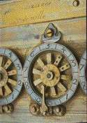
|
En 1642, il entreprend de développer une
machine à calculer afin d'aider son père,
juriste, dans son travail de comptabilité fiscale. Il n'a alors que
19 ans. Destinée au calcul abstrait et financier, la "Pascaline"
additionne, soustrait, multiplie et divise, grâce à un système composé
de six roues à dix dents. Au bout de trois ans d'effort, Pascal a une
machine finalisée et décide de la commercialiser ; un certain nombre
d'exemplaires sont fabriqués, mais le coût est trop élevé et la
production sera suspendue. |
En 1646, Pascal se convertit au
jansénisme, mais continue ses études scientifiques. Ce sont ensuite les expériences sur le
vide, à la suite des travaux de Torricelli, qui occupent pleinement
Pascal. De 1646 à 1654, il multiplie ces propres expérimentations
avec toutes sortes d'instruments. L'une d'entre elles lui permet de
confirmer la réalité du vide et de la pression atmosphérique et d'établir
la théorie générale de l'équilibre des liqueurs. Pascal est également
à l'origine de l'invention de la presse
hydraulique, basé sur le principe qui porte son nom et qui veut
que, dans un fluide incompressible en équilibre, les pressions se
transmettent intégralement.
Grâce à ses connaissances en
hydrostatique, il participe à l'assèchement
des marais poitevins, à la demande du Duc de Roannez.
Celui-là même avec qui il créera les fameuses lignes de carrosses à
cinq sols pour circuler dans Paris, préfigurant les transports
en commun et qui reflètent parfaitement le souci d'action
concrète qui habite le savant.
A partir de 1650, Pascal s'intéresse
au calcul infinitésimal et, en arithmétique, aux suites de nombres
entiers. S'il n'est pas le premier à travailler sur le triangle
de Pascal, puisque des mathématiciens chinois et arabes
l'ont fait bien avant lui, on lui doit l'étude la plus systématique.
Et c'est à l'occasion du Traité sur le triangle arithmétique qu'il énonce
pour la première fois le principe du raisonnement par récurrence.
 En 1654, il vit une expérience
mystique, une révélation qui le conduit à une conversion
totale. Il s'installe au monastère de Port Royal, chef-lieu du
jansénisme à une
trentaine de kilomètres de Paris, et se consacre désormais presque
exclusivement à la défense du jansénisme et à des œuvres
littéraires à saveur philosophico-religieuses. Le jansénisme
fait partie de la Réforme catholique française. C'est une réaction
à la vision optimiste de l'homme et de ses capacités. En 1654, il vit une expérience
mystique, une révélation qui le conduit à une conversion
totale. Il s'installe au monastère de Port Royal, chef-lieu du
jansénisme à une
trentaine de kilomètres de Paris, et se consacre désormais presque
exclusivement à la défense du jansénisme et à des œuvres
littéraires à saveur philosophico-religieuses. Le jansénisme
fait partie de la Réforme catholique française. C'est une réaction
à la vision optimiste de l'homme et de ses capacités.
Ses derniers travaux scientifiques concernent les cycloïdes. En 1658,
il résout ainsi certains problèmes qui occupaient nombre de mathématiciens,
liés notamment à l'aire et au volume créés par la rotation d'une
cycloïde autour de son axe.
Blaise Pascal est également, avec Pierre Fermat, le fondateur
du calcul des probabilités.
Malade (il est handicapé et souffrant depuis son
jeune âge, ce qui ne l'empêche pas, depuis sa conversion, de
porter un cilice et de mortifier son corps), Pascal meurt à 39 ans, en
pleine querelle entre les jansénistes et les jésuites, querelle que
l'Église ne tranchera qu'au siècle suivant, avec de graves
conséquences politiques.
HUYGENS,
CHRISTIANN (1629-1695)
Physicien et astronome hollandais,
Huygens fit le premier, en 1690, l'hypothèse des ondulations lumineuses, expliquant
ainsi les effets de réfraction et de diffraction.
Il définit les notions de force centrifuge et de moment d'inertie, énonce
les lois du pendule qui seront utilisées dans la construction des horloges.
il sera l'inventeur du ressort spirale permettant la construction des
montres.
En astronomie, il découvrit (1656) les anneaux de Saturne et son premier
satellite (le plus gros : Titan, 5150 km de diamètre) au moyen d'une
lunette astronomique de sa fabrication. Il fallut attendre les sondes américaines
Voyager (1980 à 1981) pour reconnaître une multitude d'anneaux et dénombrer
20 satellites de cette planète. -
NEWTON, SIR
ISAAC (1642-1727)
|
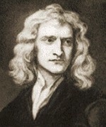 |
"Le plus grand génie de
tous les temps et tous les pays". C'est ainsi que
plusieurs qualifient l’un des plus célèbres scientifiques
britanniques.
Après une vie de travail épuisant qui ruine sa santé, il connaît
la notoriété.
Devenu baronnet en 1705, Newton est inhumé à l’abbaye de
Westminster, aux côtés des rois d’Angleterre. |
Mathématicien, astronome et philosophe
anglais, il est, jeune, un élève peu attentif, qui préfère construire de
petites machines et observer la nature. Il devient bachelier es arts
en 1665 à l'Université de Cambridge. Mais cette même année, la
peste s’abat sur la ville et Newton interrompt ses études durant deux années.
C’est pendant cette période que Newton effectue
la plus grande partie des ses découvertes et c’est là que la tradition
situe la fameuse histoire de la pomme, qui n’est probablement qu’une
invention. Pourtant, s’il développe ses principales thèses, notamment en
optique, il ne publiera rien avant de nombreuses années, par peur des
discussions et confrontations avec ses contemporains. (Darwin
fera de même, plus de deux cents plus tard.)
Après son retour à Cambridge, Newton
acquiert les autres grades universitaires et obtient en 1669 la chaire de
mathématiques. En effet, Newton a effectué de nombreuses recherches
dans cette discipline. Dès 1666, à partir du tracé des tangentes,
il entame l’étude des fonctions dérivables et de leurs dérivées, sur
la base des travaux de Fermat. L’année suivante, il classifie les
cubiques et en donne des tracés corrects avec asymptotes, inflexions et
points de rebroussement. En 1669, il rédige un compte-rendu sur les
fondements du calcul infinitésimal qui ne sera publié qu’en 1711.
On peut dire qu’en 1670, Newton a fondé
l’analyse moderne.
En 1671, Newton perfectionne le télescope
en utilisant un miroir sphérique dénué d’aberrations chromatiques comme
objectif. La Royal Society, qui connaît ce type de télescope,
accueille Newton l’année suivante. Encouragé par l’intérêt que
lui porte cette institution, le physicien lui présente la première
communication qui sera rendue publique. Il prouve alors que la
lumière blanche est en fait l’addition de lumières colorées.
En 1675, il complète ses travaux sur la lumière en exposant sa théorie
corpusculaire. Toutefois, pour expliquer les irisations, il attribue aux
particules des propriétés ondulatoires, faisant déjà une synthèse de
ces deux aspects complémentaires.
Ayant achevé l’essentiel de ses
recherches en optique, Newton semble se désintéresser des sciences.
Mais la visite d’Edmund Halley en août 1684 va relancer ses
travaux. L’astronome britannique le consulte à propos des lois de
Kepler et des orbites elliptiques des planètes. Les réponses de
Newton sont à ce point convaincantes que Halley le pousse à publier ses
recherches. Et c’est en 1687 que paraît son œuvre maîtresse :
Philosophiae naturalis principia mathematica.
Cet ouvrage
expose le principe d’inertie, la proportionnalité des forces et des accélérations,
l’égalité de l’action et de la réaction, les lois du choc, étudie le
mouvement des fluides, donne la théorie des marées, etc. Mais Newton
y développe avant tout sa théorie de l’attraction universelle : les
corps s’attirent avec une force inversement proportionnelle au carré de
la distance qui les sépare. C’est d’ailleurs à ce sujet qu’il
aura de vives discussions avec le physicien et philosophe Robert Hooke qui
l’accuse de plagiat.
|
Les
trois lois du mouvement
|
|
1.
La loi de l’inertie
|
|
Tout
corps persévère dans l’état de repos ou de mouvement uniforme en
ligne droite dans lequel il se trouve,
à moins que quelque force n’agisse sur lui, et ne le
contraigne à changer d’état.
|
|
2.
L’action est associée à la variation de la quantité de
mouvement
|
|
Les
changements qui arrivent dans le mouvement sont proportionnels à la
force motrice et se font dans la ligne droite dans laquelle cette
force est appliquée.
|
|
3.
La loi de la conservation de la quantité de mouvement
|
|
A
toute action est toujours opposée une réaction égale, ou encore :
Les
actions réciproques de deux corps l’un sur l’autre sont toujours
égales et dirigées en sens opposés
|
Newton consacre également beaucoup de
temps à l’étude de l’alchimie, du mysticisme et de la théologie.
Il est nommé directeur de la Monnaie et abandonne sa
chaire de Cambridge. En 1703, il est élu président de la Royal
Society.
PAPIN, DENIS
(1647-1714)
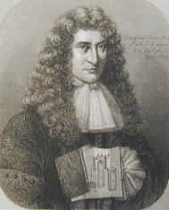 Physicien français, Papin fut le premier
à reconnaître la force élastique de la vapeur
d'eau. La
machine atmosphérique à piston flottant, ou machine de Denis Papin, n'a
pas de succès pratique, mais il a mis les autres chercheurs tels Otto Von
Guericke, Tomas Savery et Tomas Newcomen sur la bonne piste.
Plus que toute autre invention, la machine à vapeur symbolise
la révolution industrielle du 18e siècle. Elle est le prélude
d'une révolution énergétique qui transforme le monde.
Pour la première
fois, l'homme peut produire de l'énergie motrice indépendamment des
conditions naturelles. La machine à vapeur change ses convertisseurs d'énergie
habituelle (moulins à eau, à vent et à marée). Ce qui entreprend véritablement
l'ère moderne du machinisme.
Papin eut une vie difficile d'exilé. Protestant, il quitte la France suite à la
révocation de l'Édit de Nantes. Il oeuvre dans
différents domaines et pays, ses inventions sont nombreuses et touchent la
vie quotidienne des gens.
1681 Papin soumet à la Société
Royale de Londres une nouvelle invention, le "Digesteur"
(la marmite à Papin), une machine que Denis Papin destine à abolir la
famine, en permettant la dissolution de tous les bas morceaux. 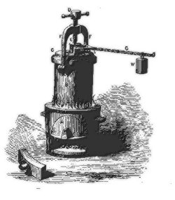
C'est un énorme succès, Papin accède à la notoriété, dans le
public, à la cour, et dans le monde savant. Pourquoi à l'époque,
s'enthousiasme-t-on autant pour ce qui n'est en fait qu'un autoclave, un
ustensile de cuisine capable de cuire les aliments en un temps très court
grâce à la vapeur d'eau?
C'est que Papin a mis en lumière certaines propriétés de la vapeur
jusqu'alors inconnues : celle de l'élévation de température quand elle
est confinée, permettant de dissoudre toutes les matières organiques, et celle
de l'élasticité de la vapeur, que Papin équilibre en toute sécurité, grâce
à la soupape.
1686
Denis Papin travaille à améliorer le digesteur, et la pompe à
double effet. Il fait aussi la démonstration d'une catapulte
pneumatique, imaginée par Von Guericke, et qu'il a construit. Il travaille
aussi à améliorer les constructions, en inventant un moyen simple de
prendre l'horizontale : le niveau à bulle.
1687
Denis Papin construit, et fait la démonstration de sa machine à
transporter au loin la force des rivières : une machine destinée à
prendre l'énergie d'une rivière, à la transporter sous la forme du vide,
et à l'utiliser à volonté sur un poste éloigné : une sorte d'ancêtre
de l'électricité...
1690
: Denis Papin fait sa plus grande découverte
: il trouve le moyen de réaliser un vide parfait dans un cylindre, en y
faisant condenser de la vapeur. Son cylindre de 6 cm de diamètre
soulève près de 30 kilos ! Papin en profite pour
esquisser, dans un article, le premier bateau à vapeur: 4 cylindres
pneumatiques, munis de crémaillères, mettant en rotation un axe, muni de
roues à aubes.
1691-1695
il continue cependant à travailler à différentes
machines, et à élucider quelques énigmes. Il améliore
sa pompe à double effet de 1688, et il applique la force du vide au
pressoir à cidre, et celle de l'air comprimé à l'alambic. Il résout
une énigme, concernant le fonctionnement d'un siphon. Il améliore
aussi la forge, en pulsant de l'air à travers le foyer, avec une autre
de ses inventions, le soufflet de Hesse (pompe à air
centrifuge). Son analyse de la machine balistique de Perrault
montre aussi, (selon De La Saussaye), qu'il entrevoit les lois de la
gravitation universelle. D'autres machines, encore, lui permettent
d'améliorer la conservation des jus de fruits, en les chauffant, puis en
les mettant sous vide.
1695
Papin va à Cassel, en Allemagne, où le Landgrave a besoin de lui pour
mener à bien ses projets. Il commence par demander à Papin d'améliorer
le sous-marin dont Drebbel avait
fait la démonstration en 1620 dans la Tamise, à Londres. Alchimiste
hollandais, Cornelis Drebbel aurait obtenu, par pyrolyse du salpêtre
(nitrate de sodium), un "air" (en fait de l'oxygène) qui lui
permettait de rester pendant des temps prolongés dans un sous-marin de sa
conception
Papin refuse de croire en ce qu'il appelle "l'alchimie de Drebbel".
Il cherche une solution mécanique. et construit un premier modèle de sous
marin qui s'alimente en air extérieur par le truchement d'une pompe.
Lors de la mise à l'eau , toute la cour est là, pour assister à l'expérience.
Mais la flèche de la grue, devant déposer le sous marin dans l'eau se
rompt (sabotage ?), et le sous- marin abîmé coule comme une pierre au fond
de l'eau. Les ennemis du français auprès du Landgrave se gaussent, et
Papin disparaît pendant plusieurs jours.
Le deuxième modèle de sous marin est différent. Plus léger, il
fait appel à une pompe à air (le soufflet de Hesse) pour le
pressuriser. On fait un essai de cette nouvelle machine, qui
donne satisfaction. Cependant le Landgrave ne donnera pas de suite.
1696 À
Cassel, Papin, à qui on avait demandé de réfléchir à la fabrication
de miroirs, invente un four qui améliore la fonte du verre plus
efficacement. Touche-à-tout, il invente aussi un procédé de conservation
des aliments, en améliorant la production d'acide sulfureux.
Il améliore également le couchage, en créant un lit à
sommier, et en
mettant au point des matelas et des coussins gonflables en cuir.
1698
On a demandé aussi à Papin d'améliorer l'évaporation dans les
salines (mines de sel). Papin fait une expérience devant le
Landgrave, où il réussit à évaporer sept fois plus d'eau dans la cuve, avec
seulement un tiers plus de bois. Papin réalise alors un gros soufflet
de Hesse et une cuve sept fois plus grosse.
Grâce au four construit par le Landgrave
sur les plans de Papin, ce dernier construit de "grandes cornues de fer, très utiles
pour les machines à feu". En août, il écrit à Leibniz qu'il
n'utilise plus seulement la succion (condensation de la vapeur), mais qu'il
emploie aussi "la force que la pression de l’eau exerce sur les
autres corps en se dilatant ", et que par ce moyen, il a réussi
à élever l'eau à environ 20 mètres.
Le Landgrave pourtant, à l’instar de
Louis XIV pour les fontaines de son Versailles, accorde plus de confiance à
la mécanique pour lever l’eau, qu’à la force du la vapeur, et il
préfère le projet d’un mécanicien pour élever l’eau de la Fulda (la
rivière qui passe devant Cassel) dans un réservoir, situé sur la plus
haute tour du château.
Mais voilà que début juin 1699, la nouvelle arrive qu’un certain Savery
, en Angleterre, a fait approuver devant le parlement, une machine à " lever
l’eau, par la force du feu ", et il change d’avis: c’est désormais Papin qui se chargera
de ce travail, par la force du feu.
1700
À 53 ans, la situation de Papin reste cependant précaire. La guerre
avec la France menace à nouveau, et il cherche une invention qui pourrait définitivement
forcer Louis XIV à la paix, et asseoir définitivement sa situation financière.
C’est dans cet esprit qu’il travaille d’arrache-pied à réaliser son
Lance Grenades. Cette idée d’une arme de jet pneumatique
l’a poursuivi toute sa vie, et il va en faire un chef d’œuvre, avec le
Lance Grenades pneumatique. Sans poudre à canon, l’arme est
capable, de lancer un poids de deux livres à une distance de 90 pas;
il suffit d’actionner un levier vers le bas, pour faire le vide dans un
cylindre bien étanche. On allume alors la grenade, puis on déclenche
le tir qui se produit avec toute la force que lui donne l’entrée de la
pression atmosphérique dans le cylindre. À la fin du mouvement de
rotation, la grenade quitte son logement et se trouve propulsée à 90 pas.
L’arme peut tirer 200 coups par heure, ce qui
est bien plus qu’un mortier de l’époque, dont il fallait attendre que
le fût refroidisse. Elle est aussi très légère, et facilement
transportable. Deux hommes peuvent
commencer un bombardement intensif et rapide ; l’un activant le
levier, l’autre chargeant les projectiles… Mais si la conception de l’arme est parfaite, dans
l’art de la pneumatique, remarquable de génie et de simplicité selon
certains, il semble qu’elle n’ait pas convaincu les militaires.
1704
Papin commence la construction de son bateau à
roues à aubes. Celui-ci est pourvu d'un mécanisme pneumatique ou
mécanique qui permet de mouvoir l'axe des roues à aubes.
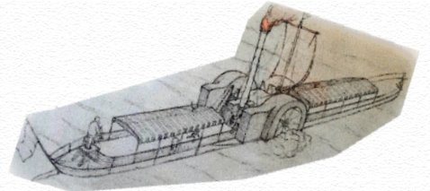
1707
Papin, malgré les avertissements de Leibniz, insiste pour retourner en
Angleterre, et celui-ci finit par lui faire une lettre de recommandation.
Accompagné de sa femme et de son fils, il part sur la Fulda à bord de son bateau
à aubes. Arrivé à l'embouchure de la Weser, à bord de son
bateau "sans voiles ni rames", il se heurte à la Guilde des
Bateliers de la Weser, qui lui refusent le passage.
Après deux jours de tergiversations, alors qu'il a obtenu le droit de
passage, et qu'il s'apprête à partir, Denis Papin est assailli par les
bateliers, jeté hors de son bateau, et le bateau mis en pièces.
1714
Papin meurt misérable à Londres.
La source des données sur Papin se trouve sur un site qui lui est consacré, Les
Amis de Papin, qui tente de rétablir la gloire de ce
grand savant qui cherchait des inventions utiles à tous, mais qui ne
s'occupait que peu et mal de son côté commercial. Vous y trouverez
des explications, dessins et animations expliquant les inventions de Papin.
RETOUR AU HAUT DE LA PAGE
À Paris, le
17ème siècle a vu, entre autres, l'édification du palais du Luxembourg,
du Palais Royal, de la chapelle de la Sorbonne, de la colonnade du Louvre,
des Invalides. À Versailles, pendant trente ans, le roi Louis XIV
commande les somptueux agrandissements du palais.
Voici
quelques monuments datant du 17ème siècle.
|
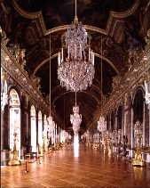 VERSAILLES
Louis Le Vau est le premier
architecte de Versailles. Ces travaux demandent beaucoup
d'innovations dans tous les domaines. Par exemple, Louis de Nehou trouve
en 1688 le moyen de fabrication des glaces par coulée. Il travaille pour
le compte de la Manufacture royale de glaces. Avant, les riches et puissants
du royaume devaient acheter leurs miroirs à
prix d'or à Venise, ce qui faisait fuir des capitaux français.
Avoir de grands miroirs, à l'époque de
Louis XIV, est un signe de puissance, tout comme avoir dans ses jardins, des
fontaines et des jeux d'eaux. Aussi, Louis XIV
veut, coûte que
coûte, les fontaines les plus grandioses pour Versailles, et ainsi pour tout.
|
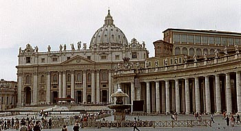
PLACE ST-PIERRE
Lorsque le pape Alexandre
VII charge, en 1656, l'architecte le Bernin de la construction d'une place devant
Saint-Pierre, il
attend de lui la résolution architecturale d'un grand nombre de difficultés
à la fois topographiques et liturgiques. Le pape devait être visible des fidèles,
de la loggia de Saint-Pierre, mais aussi de l'une des fenêtres de ses
appartements privés.
Le choix que fit le Bernin d'un plan elliptique pour la place Saint-Pierre,
outre sa pureté géométrique, offre à celle-ci une bonne condition d'accueil
et une visibilité optimale. Il met également en valeur, l'obélisque dressé
devant la basilique par Domenico Fontana en 1586. |
|
TAJ
MAHAL
Des palais, des églises, des mausolées
s'élèvent partout dans le monde.
À Agra, aux Indes, le Taj Mahal est
construit de 1632 à 1643. |
RETOUR AU HAUT DE LA PAGE
|